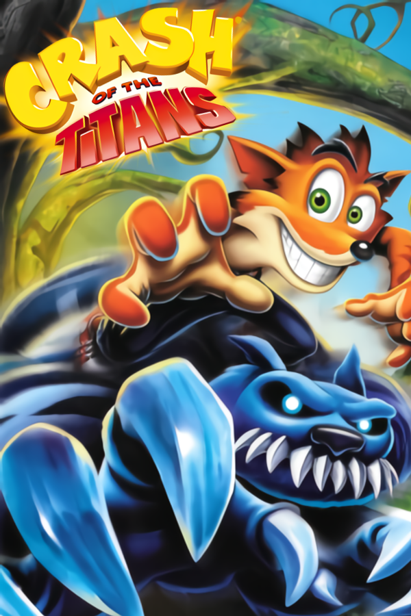

Crash of the Titans
Crash of the Titans
Detalhes
|  | |
| Tempo de jogo | Não Jogado |
| Última Atividade | Nunca |
| Adicionado | 13/09/2024 21:00:44 |
| Modificado | 10/03/2025 1:20:52 |
| Status de Conclusão | Not Played |
| Biblioteca | Playnite |
| Fonte | |
| Plataforma | Sony PlayStation 2 |
| Data de Lançamento | 02/10/2007 |
| Pontuação da Comunidade | 71 |
| Avaliação da crítica | 68 |
| Pontuação do Usuário | |
| Gênero | Beat 'Em Up Platform |
| Desenvolvedor | Radical Entertainment |
| Editor | Vivendi Games |
| Funções | Multiplayer Single Player |
| Links | Wikipedia |
| Tag | [EMT] Video Micro missing [EMT] Video missing [HLTB] 05 a 10 horas |
Descrição
Crash of the Titans is a 2007 platform game developed by Radical Entertainment and published by Vivendi Games for the PlayStation 2, PlayStation Portable, Wii and Xbox 360. It is the first game in the Crash Bandicoot series not to have a Japanese release, and the last to be published by Vivendi Games before Activision merged with the company the following year. Amaze Entertainment developed two separate versions of the game: one for the Nintendo DS and one for the Game Boy Advance. The game is the fourteenth installment in the Crash Bandicoot video game series, and the sixth game in the main franchise.
The game's story centers on the discovery of a substance known as "Mojo", which series antagonist Doctor Neo Cortex and his niece Nina harvest to turn the inhabitants of the Wumpa Islands into an army of ferocious mutants known as "Titans". The protagonist of the series, Crash Bandicoot, must stop Cortex and Nina by using the technique of "jacking" to take control of and destroy the Titans while collecting mojo; he must also rescue his sister Coco, who has been kidnapped and forced to help build a doomsday machine that will assist the Titans in Cortex and Nina's bid for world domination.
Crash of the Titans received mixed reviews upon release. Although the jacking mechanic, visuals, voice acting, and humor were received positively by most critics, the game's combat system and nonadjustable camera were criticized. The game was nominated for three awards.